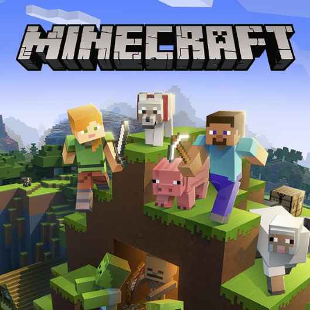
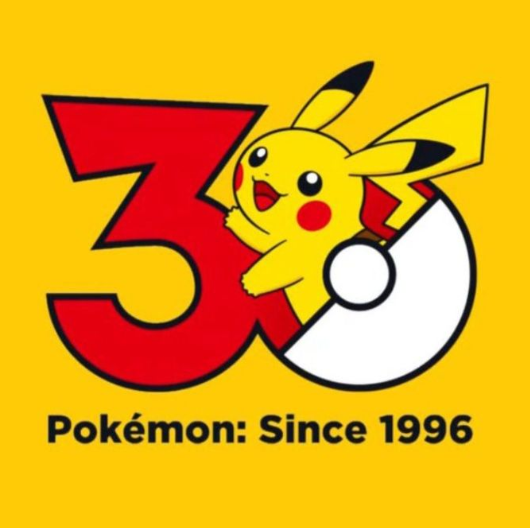
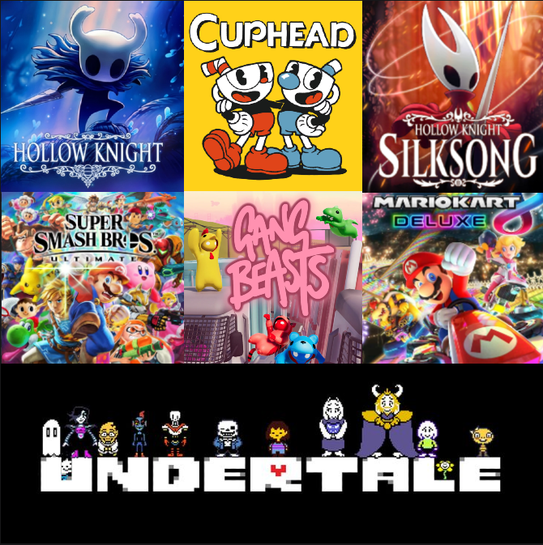

Sobre mim
Eu sou uma pessoa que adora jogar, mas eu não me considero um gamer por um motivo, embora eu jogue com frequência, eu não jogo diversos games. Mas isso não me impede de me divertir, pois eu sempre jogo eles de maneiras diferentes, sempre tentando inovar e ter experiências diferentes, explorando ao máximo cada um. Outro ponto importante, são as interações que os jogos me proporcionam, na maioria das vezes que eu entro em chamada com os meus amigos nos jogamos, mesmo que seja o pior jogo que a gente encontrou no roblox, ou o melhor modpack no minecraft, nós estamos sempre rindo e nos divertindo.
Jogos que eu Gosto
- Minecraft
- Pokémon
- Roblox
- Outros

Sem dúvidas minecraft é o jogo que eu mais joguei na minha vida, e sempre eu consigo ter uma experiência completamente diferente uma da outra, seja por causa da variedade de modificações, as atualizações constantes do jogo ou até mesmo pelos amigos que geram interações engraçadas e memoráveis.

Agora ao invés de falar de um jogo específico, decidi falar de uma franquia. Desde criança, sempre gostei muito de pokémon, assistia muito o anime, quando eu descobri que existiam jogos também, eu queria muito poder jogar um deles, mas só consegui um bom tempo depois, no final da 7ª geração com "Pokémon let's go Pikachu", na época fiquei muito feliz por finalmente jogar pokémon, mas eu me diverti muito mais com os jogos futuros, "Pokémon Sword", "Pokémon Legends: Arceus", "Pokémon Scarlet", e por fim "Pokémon Legends: Z-A". Entre todos esses, o que eu mais gostei e passei mais horas jogando, foi sem dúvidas o Scarlet com sua DLC, o jogo pode ter muitos problemas, gráficos feios, pouca otimização, muitos bugs, mas ainda assim eu me diverti muito com ele.
Diferente dos exemplos anteriores, Roblox não é um jogo, e nem uma franquia, mas sim uma plataforma de jogos, ela permite que qualquer um possa criar um jogo com o Roblox Studio, utilizando Luau (uma variação da linguagem lua) e não só modelos autorais, mas também itens disponibilizados pelo resto da comunidade no catálogo. Graças a essa liberdade a plataforma está repleta de jogos redículos e engraçados, perfeitos para jogar com os amigos de madrugada, gerando muitas risadas e diversão. Além de toda essa bobeira, existem pérolas perdidas no catálogo, tesouros perdidos no meio da bagunça e infantilidade, alguns jogos que realmente são bons e divertidos, que você tem vontade de jogar por dias, ao contrário da maioria que você joga por algumas horas e nunca mais entra no jogo.

Outros jogos que eu estou jogando, já joguei, ou jogo com pouca frequência. Entre eles, Undertale e os dois jogos de Hollow Knight, que eu zerei; Mario Party Jamboree, Super Smash Bros Ultimate e Mario Kart 8 Deluxe, que eu jogo com minha família e amigos eventualmente; Gang Beasts, The Escapists 2 e Civilization VI, que eu joguei uma vez ou outra para fugir do padrão. Todos esses jogos foram bem divertidos, mas não os joguei tanto tempo quanto os outros acima, por preferir manter certa constância, jogando os mesmos jogos, mas mudando o conteúdo e o modo de jogar por meio de mods, desafios, ou apenas pela participação de amigos.
Meu Próprio Jogo
Ao longo do 9º ano eu passei a me interessar mais por criar a minha própria diversão, isso porque eu conheci 2 mods de minecraft, "KubeJS" e "FTB Quests", com eles é possível modificar completamente as regras do jogo e criar as melhores questlines desde que você tenha criatividade e saiba como programar em JavaScript, ainda estou aprendendo essa segunda parte, mas lendo a documentação, eu consegui criar experiências bem divertidas para o meu grupo de amigos. Foi esse meu interesse por jogos que me levou a escolher o curso de TI da minha escola, agora estou aprendendo tudo o que eu preciso para criar o que eu quiser, mesmo com menos de 1 trimestre de aulas, eu e os outros colegas criamos nossos primeiros jogos em python, caso queira jogar o meu, o código está no github, é só executar o arquivo .py com o python e se divertir!
Repositório do Jogo Download do PythonRPGs
Também no 9º ano, eu passei a me interessar por RPG (Role Play Game) de mesa, um jogo presencial em que além de jogar você precisa interpretar o personagem, agir como ele agiria na situação. As regras vão depender do sistema utilizado pelo mestre, eu comecei jogando Ordem Paranormal, mas tenho amigos que jogam outros sistemas como D&D ou Tormenta20. Agora em 2026, um amigo meu está criando um próprio sistema a partir do zero, e como eu disse na seção anterior, eu também gosto de criar meus jogos, então decidi ajudá-lo com o que eu podia, e criei uma página online que contém todas as regras até então do sistema, facilitando a navegação, e um formulário de criação de personagem, para facilitar esse processo, no futuro eu planejo integrar esse formulário a um banco de dados, permitindo que o jogador possa visualizar todas as informações de seu personagem online, a qualquer momento, em qualquer lugar.
Repositório do Projeto Cópia do Site